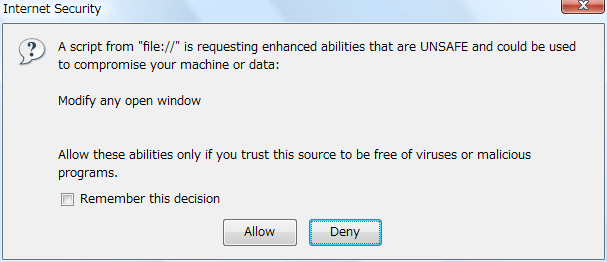

The Window.statusbar property returns the statusbar
object, whose visibility can be toggled in the window.
objRef = window.statusbar
The following complete HTML example shows a way that the visible property of the various "bar" objects is used, and also the change to the privileges necessary to write to the visible property of any of the bars on an existing window.
<!DOCTYPE html>
<html lang="en">
<head>
<meta charset="UTF-8" />
<title>Various DOM Tests</title>
<script>
// changing bar states on the existing window
netscape.security.PrivilegeManager.enablePrivilege("UniversalBrowserWrite");
window.statusbar.visible=!window.statusbar.visible;
</script>
</head>
<body>
<p>Various DOM Tests</p>
</body>
</html>
When you load the example page above, the browser displays the following dialog: 
To toggle the visibility of these bars, you must either sign your scripts or enable the appropriate privileges, as in the example above. Also be aware that dynamically updating the visibilty of the various toolbars can change the size of the window rather dramatically, and may affect the layout of your page.
| Specification | Status | Comment |
|---|---|---|
| {{SpecName('HTML WHATWG', 'browsers.html#dom-window-statusbar', 'Window.statusbar')}} | {{Spec2('HTML WHATWG')}} | |
| {{SpecName('HTML5 W3C', 'browsers.html#dom-window-statusbar', 'Window.statusbar')}} | {{Spec2('HTML5 W3C')}} |
{{Compat}}